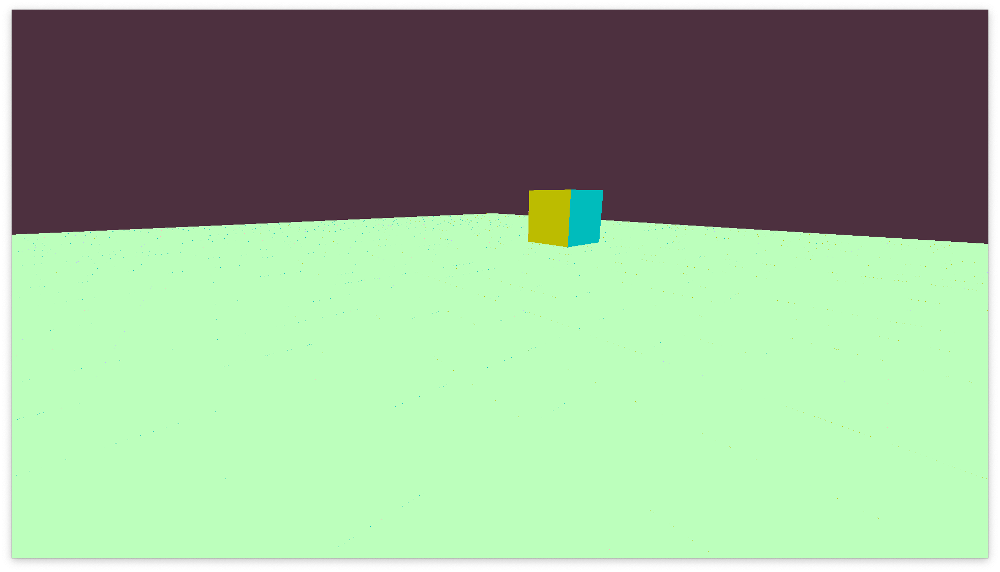
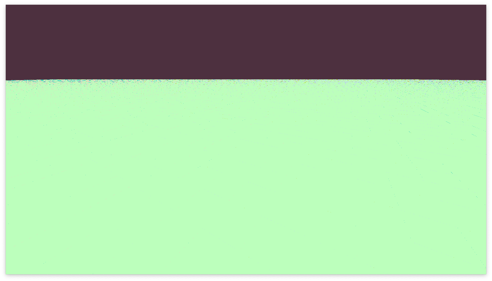

![Low-res preview](data:image/webp;base64, UklGRj4IAABXRUJQVlA4TDEIAAAvMUAKAA0wbNs2Elyjz52V/QfuM0NE/yeg2XHY5wSwJKqqkuBozg1ybAVFXs5Jwt47SEnvvbNLAujwM6e41iZhvJ2NB2waSXJU4YbLH+Xde/+/j8JxI0mKFMfLW4/jW2j/rTsT3Ni2rTQn3a/irm/+Iwrd63C4a/GFsv8CgkLWAEFMAPbswf3qTgGQkEwMxGQvyFXu7ncAdVcos7wriZZFzP1e/SuzmLspWaJl8cZ9rxFw974DYGKWWFzfrm/2AC0XWQ3G23mr2+ji0VXHEKbhPQ1haoIGgBBDJEpVMgNSQgAbbUQkAk2myTTSoM0AMoiiGeIdiQC4u9OgZmgwNLLSEDXSSINGzv9NfakRA9CAuOCPBnB2hOMAv7Vtq7Zt21bMpbU+xgwLNjMzM6O+/dhhW7DDdoL1bccW9xK3B6xtjZkG9NZqFsY0wldt27JtS5JU29j35RQk/xM+gkGEloBKkWh63uwS2kgSJMlRuwiOP9K7/86YgC/96Qfom0qgcxS5lGqlSCkoEJ4yGHuWmJLNshljM16sZBQAhMVpASAFUs752i6ldIoAVVOBWZCKZQDFyGIEDX2p5AlwEANA4qhIudRzY4QGRsBMSsGrCGJkClEnGRRgCk6IQWAtlK7lKJ1SatmBClsnAMj2YF20ncjSXFAbMVjdSt8UxKRSi1aZkZU8EYsrSilFK02m2aKMATrjwKy9It11mjaZIIVsSQCUMgi9mMVGwWpb9URaSZ7GUswQM5cCDkRSF20tOk8KSEJQBSSAlZCYhiQPlFI6tBKYJ2AogIReGaKeLrR1AgHr7RhMUnD6OuNtr8ssmmpECkqdNHgaArMcICTgEiHPEtXW8lbmbE0c5Tip62uSI4qZXikopZBKiKXEmo98yqd8qCjCVEgRsLFrapMkiYGQCPUmyUw/giJPDwEKrpRYADAXSRRlsakQABgYkMAISQsgpfWjebyazKUGPAHsDGRY9b/TsxVTcnJmVbOFMirFABsDiZy1fbccbLdIViUjJYcAwCIONZrc6Z369Bn+c4sACykLKSDDMUaGKQCZHmIiMmcT9QMukDKiIZrc376Q7+SjueO7f3P/aVDzXVumrCq0ILAYYAoQxEAEMC2BAgrBAM3JnT693sTv12vyggOUUWRDE2BBAtlYMap2amiSJbd2joCAtc5EJTr+r4K3nr/xh1/94av/riPnl/2rkz5VAnW2/ipRNWNaWrUxJWE92tYYiaN6SJSoXnsNUWbVbb63PqQzr+jn33l9/Y5ffm876XJJyuTsQZVGTLxhKApGCASloES5kJVprPt11fHxst6jF8576v/nJ9drGF5PFoFSAiPMKBiXYVhVWttI1VSllE5p1v4X1dl31x98VO/jjdc73E1du3+4b7rv/91/9Gf7hXqEmtJiKYAYxIBYEnp2LRUSkGKCyKittu3xx/sWX2lv9jnrf2udM+91vffyWnz7r//On5pJTZIwLVQCwwgMNLgyzanJZKKbqDJLoZ1Ya7d0l/9c/6qeaGryWHf38nX//v/P////ez7XdeXYwWCJUTxFLCHJdlVjorAOBREySSw1TW25+WZj+6bP2MzqkqHnhR+88p/72T/u2Z87frBrzfHVo8N18im7PqfWO7Nex9P0ddY7NZnq96/fu3nN5+U7M6kkd1vr53zkGTu+yX+5XPnNHn7szJE1c9Vw/z9u/+gdf9kL/7N//Wxnaa/bhdXlVykJG55cG/OVyfMxWtzD97vqGYdbr/W5rpZcWWeNWe7g+sP3/NZrftzr+jd1oYxFM5df+tDP98X2m+6FH2++apkVXNTqiG2cqvXTVpnkKtOTXUFQDCDJJgnUmOVrfWxkQTXX5x3bpp/u/vI7xoZeWRUi1juDXnm1WnmLEWbDhSFM5gySkFgsKbN9Tp/ijd+u9Tj7XK7N5O7T47a6zUhlNoZhiKIwNQSMJWAo+7qMiV2TSsrBBYnOY+115Pb/fquXedfHu7tXzQt1nD/NX2zVH/kfMy12QkALqSQNSQLYDAMD6GxjwKl4BIiRSg7Oynlp2/X/87CGJuxkYJbSGBgzDQwYYGwAmdi8LRuNpQpBDFTRyMxHXbcqZ+KtxToRszIpmwGCiYAYmM0GmIkFsNZw6XuFnTZ34fR6zWpCRLUxHVu0LIQsiRZgFSQ0WLNVyNjsWUyWWItiJrWyWsts9CobkxYga2RSsQhlCRmVEZUBxGJNC8ZmYxYjCQUAVDZikBZaQliEBIViJWoHw8jqAaBZCMpm8zaTvdbBgK0strSICWvHBrMuiUjVa01KGEw5MZSkGDYREJPWNZlsxixgHXs3fbAHOGbNVqq7JgkJgGxsBZGtACbFWCex2lYlaFXYQYtiNqvHkJEKyYnVK9MrhELBZgNbigWzFg8hQssUARjFxKgsAZlgyaxgNRgtMhaFKDVmGGAzJROYqSARZRZiQo+lwQggwK4Z6+BZHon+61UbuJkFemEoyxuYzdjM9pqNLdYQ25wgOUYWl5lmndcKjGPgOjgx69l1ppnXzTU3OlvVZNjisDIwYzMFoZhgdTOxPtmi6NSZgwWBNMJTG5mAak7SJAyhFdawwRjjaZCFWsbUPMHmrRJEiilhnE2eYDY7lNu5vW2WHAlYB2D7Nq/ZjDEFwRiYToj12bmcgodEZtgLzcXcbr0AYM/pVWzcyXmVrRgdtpuJUCu1jK2FDIzFOiZ467OE/doJ5dBRtGx9isNzT7LXkSHWsApRAgOAxGIgQLMYAQVoQmUzEHcFzw+1mG2MyxjJtAwEAIyyIEYZCBiFCmkAY0zpAAAA)

It feels like everyone who learns how to make a voxel-engine learns it through sheer osmosis of information, so let's change that. Come along, let's make you a voxel engine!
Overview
Hello, are you ready? Because we're going to take you from a single cube to an entire voxel engine!
Here's what you'll need to bring:
- Your own language! All the code examples are in pseudocode so unless you write a compiler for it you're not going to be able to copy paste it anyways, so pick something you like.
- Your own rendering API! Pick whatever you want, this isn't a rendering tutorial.
If you have any questions during the process feel free to reach out to me on my discord server or contact me at contact@daymare.net.
If you're set, grab a drink and let's do this!
Maybe this should've been before Overview
Here's the contents of this post since I assume it'll be quite long.
Hello, cube
I'm not planning on making the rest of the post so undetailed but rendering a cube is mostly a graphics task and if you're using OpenGL you only need to read 6 pages from LearnOpenGL to get to this point. So I'll assume you can handle this on your own.
By the end of it you should roughly have a function draw_cube that takes in a Vec3 position and draws a cube there.
Here's mine:

And now, all that's left to do is place more cubes everywhere! A simple for loop should suffice
for z in 0..32 {
for x in 0..32 {
draw_cube(Vec3::new(x, 0, z));
}
}
This should give us a one voxel tall 32x32 rectangle.

Now, instead of doing the for loop every time, let's put our voxels in a data structure and call it our World.
We can put a HashSet of positions here to know what world coordinates have a voxel.
Now depending on what programming language you're using you might not be able to put Vec3 in a HashSet.
And even if you can, we should still be converting our float-based Vec3 into an integer-based IVec3 as that'll allow us to ensure that voxels are aligned to a grid. Which is important for foreshadowing reasons.
struct World {
voxels: HashSet<IVec3>,
}
then, all we need to do is populate our world at the start
for z in 0..32 {
for x in 0..32 {
world.voxels.insert(IVec3::new(x, 0, z))
}
}
and then every frame we can render our world like so
for voxel_pos in world.voxels {
draw_cube(voxel_pos);
}
After all that you should have.. the exact same scene! But now we can do funky stuff like adding a random cube in the middle of nowhere by just adding it to our World
world.voxels.insert(IVec3::new(7, 2, 13))

We can even add and remove blocks at runtime. Let's make it so when we press Space the block we're standing in is created if it doesn't exist and removed if it does
if input.is_key_pressed(Key::Space) {
var position = camera.position.as_ivec3();
if world.voxels.exists(position) {
world.voxels.remove(position);
} else {
world.voxels.insert(camera.position.as_ivec3())
}
}
Now I encourage you to go experiment with this a bit; maybe change the dimensions of the initial platform, add weird structures etc. before continuing on.
Meshes and Chunks
If you've tried to increase the platform's size you might've noticed that the performance suffers greatly. This is because if you implemented the draw_cube function as naively as I have (without instancing) you'll be uploading & drawing 36*voxel_count vertices every frame. Which is a lot of data to be uploading to the GPU every frame.
What we can do is create a single Mesh for our world and only upload that once at the start. To do that we'll first need to add a Mesh to our world
struct World {
voxels: HashSet<IVec3>,
mesh: Mesh?,
}
The
?means that the Mesh can be none, this is because we won't have a Mesh at the start of the program.
and then when rendering we will
if world.mesh != none {
draw_mesh(world.mesh);
} else {
create_mesh(world);
draw_mesh(world.mesh);
}
and create_mesh would look something like
fn create_mesh(world: &World) {
var vertices = [];
for voxel_pos in world.voxels {
draw_cube(vertices, voxel_pos);
}
world.mesh = Mesh::from_vertices(vertices);
}
so now if you run it you should once again get the exact same scene. But! you might have noticed that now you can't modify the world anymore.
Ah, the joys of engine development. What we have done is cache our world Mesh on the first frame, but currently we don't have a way of invalidating it.
Which means even after we modify our HashSet we will be drawing the cached Mesh from the first frame.
Sounds intimidating but all we need to do is go back to our world modification code and set world.mesh to none
if input.is_key_pressed(Key::Space) {
world.mesh = none;
...
}
Voilà!
Now we finally have the same thing we had 5 minutes ago.
Before we were drawing the entire world block by block, now we are drawing the entire world at once which comes with a brand new problem of its own, we need to rebuild the entire world whenever a single block changes.
Which sounds fine when our world is 32x32 but at something like 2048x2048? That's over four million cubes to rebuild just because one changed.
This leads to the second buzzword of this section: Chunks
But before we move onto that let's introduce a flip_voxel function on our World to make our job a bit more convenient.
fn flip_voxel(world: &World, position: IVec3) {
world.mesh = none;
if world.voxels.contains(position) {
world.voxels.remove(position);
} else {
world.voxels.insert(position.as_ivec3())
}
}
and then we can switch out our input to
if input.is_key_pressed(Key::Space) {
flip_voxel(world, camera.position);
}
Basically, instead of treating the entire world as one giant data structure we split it up into smaller pieces called chunks.
Each chunk is just a mini-world, let's say 32x32x32 blocks big (the exact size doesn't really matter)
When you place or remove a block, you don't rebuild the whole world but instead just rebuild the chunk that the block is in.
Basically, we're building the world out of a bunch of tiny worlds that all work independently, which allows us to change one of them without changing all the others.
[a 2d image that shows a world being a single chunk vs split up into a 32x32 chunks]
All we need to do for implementing it is modify our World so that instead of storing every voxel in one big HashSet we'll group them by which chunk they belong to. Each chunk keeps track of its own voxels, and the world just tracks which chunks exist. We will also remove the mesh field from our world and move it to its chunk.
For all practical purposes we're just renaming our World into Chunk and creating a new World type.
struct World {
chunks: HashMap<IVec3, Chunk>, // !!
}
struct Chunk {
voxels: HashSet<IVec3>,
mesh: Mesh?, // !!
}
For my implementation I'll say that a Chunk will start on (0, 0, 0) and end at (32, 32, 32). And our World will store our Chunks in chunk-space.
That means that the Chunk at (1, 5, 3) will span voxels from (1x32..2x32, 5x32..6x32, 3x32..4x32).
In order to convert from a world-position to a chunk position & a local position we'll need to do some math on it. We can divide our world-position by our chunk size (32) to get the position of the chunk that world position is in. Then we take the remainder (or modulus) of our world position by our chunk size (32) to find the chunk local position.
However there's something subtle but important we need to be wary of, negative numbers.
Take the world position (-7, 0, 0) for example, we want it to be on chunk (-1, 0, 0) with a local offset of (7, 0, 0). But in most programming languages if you just did what we talked about above you would get a chunk position of (0, 0, 0) with a local offset of (-7, 0, 0). The problem is that the chunk at (0, 0, 0) is double the size of all other chunks.
That's kind of annoying, in order to solve this we can use the euclidian versions of these operations, also known as floor division/remainder.
So let's look at how we'll need to change our flip_voxel function
fn flip_voxel(world: &World, position: IVec3) {
var chunk_position = position.div_euclid(32);
var local_position = position.rem_euclid(32);
var chunk = get_or_create_chunk(world, chunk_position);
chunk.mesh = none;
if chunk.voxels.contains(local_position) {
chunk.voxels.remove(local_position);
} else {
chunk.voxels.insert(local_position.as_ivec3())
}
}
We'll need to create a get_or_create_chunk function, this'll make more sense later
fn get_or_create_chunk(world: &World, chunk_position: IVec3): &Chunk {
if !world.chunks.contains(chunk_position) {
world.chunks.insert(chunk_position, Chunk { mesh: none, voxels: HashSet::new() } )
}
return world.chunks.get(chunk_position)
}
Of course, we'll also need to remove the create_mesh function for our World and make one for our chunks. Okay I lied we're just gonna change the type parameter from World to Chunk.
fn create_mesh(chunk: &Chunk) {
var vertices = [];
for voxel_pos in chunk.voxels {
draw_cube(vertices, voxel_pos);
}
chunk.mesh = Mesh::from_vertices(vertices);
}
and then update our rendering code. When rendering we'll need to offset the mesh by chunk_pos x chunk_size. Because, yk, we're just tiling these chunks.
for chunk_pos, chunk in world.chunks {
var offset = chunk_pos * 32;
if chunk.mesh != none {
draw_mesh(chunk.mesh, offset);
} else {
create_mesh(chunk);
draw_mesh(chunk.mesh, offset);
}
}
I almost forgot, but we also need to change how we populated our world at the start
for z in 0..32 {
for x in 0..32 {
world.flip_voxel(IVec3::new(x, 0, z));
}
}
world.flip_voxel(IVec3::new(7, 2, 13));
so for, hopefully but not likely, the last time we finally have the same thing we had 15 minutes ago.

phew, well that was a lot of work for not much visual pay-off huh?
I should probably take you through optimizing the mesh generation but before that, how about we take a look at some basic world generation instead?
World Generation
So the simplest world-generation might work with just making a flat platform on a certain Y-level, and with the setup we have it'll be trivial!
The first thing we'll need to do is modify our get_or_create_chunk function (see I told you it'd be important later!)
So far it's been responsible for creating empty chunks when we needed them. But now we can start to use it to also generate those chunks when needed.
Whenever a new chunk is generated, we'll stuff it with some terrain. In this case that terrain is just "flat".
It's not glamorous but hey, something something Rome wasn't built in a day and I did say this is going to take a weekend.
fn get_or_create_chunk(world: &World, chunk_position: IVec3): &Chunk {
if !world.chunks.contains(chunk_position) {
var voxels = HashSet::new();
if chunk_position.y == 0 {
for z in 0..32 {
for x in 0..32 {
voxels.insert(IVec3::new(x, 0, z));
}
}
}
world.chunks.insert(chunk_position, Chunk { mesh: none, voxels } )
}
return world.chunk.get(chunk_position)
}
If you just ran this code you might've noticed that the world is looking kinda empty . That's because we don't generate any chunks that aren't being modified and so to fix this we need to introduce the concept of a render distance.
The idea is simple: pick a radius around the camera and touch 'em all.
I could bore you with a dozen different ways to do this efficiently, or we can just touch everything every frame. Which is fine, probably.
So let's go back to our rendering loop and tweak it. We need to offset our radius so that it's around the camera, in order to do that we can just offset it by the chunk the camera is in.
var radius = 4;
var camera_chunk = camera.position.div_euclid(32);
for y in -radius..radius {
for z in -radius..radius {
for x in -radius..radius {
var chunk_offset = IVec3(x, y, z);
var chunk_pos = camera_chunk + chunk_offset;
var chunk = get_or_create_chunk(world, chunk_pos);
var offset = chunk_pos * 32;
if chunk.mesh != none {
draw_mesh(chunk.mesh, offset);
} else {
create_mesh(chunk);
draw_mesh(chunk.mesh, offset);
}
}
}
}
And there it is! A flat, infinite plane. Not much to look at, but hey, at least it’s not the same thing we’ve been staring at for the past few sections.

Except, do you see that giant hole too? Okay so that's our old "world generation" code sort of colliding with our new one. We can just remove that part and be fine.

I think this might be the perfect time to take a tiny detour and talk about Voxel types.
Voxel Types
So far our world has been made up of a HashSet of voxels where a voxel either exists or it doesn't, but that's kinda boring so let's give our voxels some personality.
We'll start by creating an enum called VoxelKind. You can obviously call it whatever you want. Bonus brownie points if you call it WoahThisIsVeryCool.
enum VoxelKind {
Dirt,
Stone
}
and then replace our HashSet with a HashMap
struct Chunk {
voxels: HashMap<IVec3, VoxelKind>, // !!
mesh: Mesh?,
}
We'll still treat the absence of a value as air/nothing.
But yeah, that's basically all we need to do in order to support multiple voxel types.
Apart from, you know, the dozen or so spots in our code that will now immediately break.
Let's take it from the top of my file.
First, we need to change our flip_voxel function alongside renaming it because well, you can't really flip a Dirt block can you? I'll rename it to set_voxel or something.
fn set_voxel(world: &World, position: IVec3, kind: VoxelKind?) { // !!
var chunk_position = position.div_euclid(32);
var local_position = position.rem_euclid(32);
var chunk = get_or_create_chunk(world, chunk_position);
chunk.mesh = none;
if kind == none { // !!
chunk.voxels.remove(local_position);
} else {
chunk.voxels.insert(local_position, kind) // !!
}
}
then our get_or_create_chunk function of course
fn get_or_create_chunk(world: &World, chunk_position: IVec3): &Chunk {
if !world.chunks.contains(chunk_position) {
var voxels = HashMap::new(); // !!
if chunk_position.y == 0 {
for z in 0..32 {
for x in 0..32 {
voxels.insert(IVec3::new(x, 0, z), VoxelKind::Dirt); // !!
}
}
}
world.chunks.insert(chunk_position, Chunk { mesh: none, voxels } )
}
return world.chunk.get(chunk_position)
}
and our create_mesh function as well, of course this will need to come with a change to your draw_cube function but since this isn't a rendering tutorial I'll just pass in the VoxelKind and leave the colouring up to you.
fn create_mesh(chunk: &Chunk) {
var vertices = [];
for (voxel_pos, voxel_kind) in chunk.voxels { // !!
draw_cube(vertices, voxel_pos, voxel_kind); // !!
}
chunk.mesh = Mesh::from_vertices(vertices);
}
our input needs to change as well
if input.is_key_pressed(Key::Space) {
set_voxel(world, camera.position, VoxelKind::Stone);
}
and then everything should be working!

We can also modify our world generation so that it generates stone blocks below Y=0, dirt blocks at Y=1 and air on top of it.
I'll change up the loop a bit to make it easier for you to modify it later and add your own stuff!
fn get_or_create_chunk(world: &World, chunk_position: IVec3): &Chunk {
if !world.chunks.contains(chunk_position) {
var voxels = HashMap::new();
for z in 0..32 {
for y in 0..32 {
for x in 0..32 {
var offset = IVec3::new(x, y, z);
var world_voxel_position = chunk_position * 32 + offset;
if world_voxel_position.y == 0 {
voxels.insert(offset, VoxelKind::Dirt);
} else if world_voxel_position.y < 0 {
voxels.insert(offset, VoxelKind::Stone);
}
}
}
}
world.chunks.insert(chunk_position, Chunk { mesh: none, voxels } )
}
return world.chunk.get(chunk_position)
}
And with that, our world generation is complete! It's not very pretty but I'll leave the artistic part to you.
Now, if you played around with it a bit, you might've noticed that it's painfully slow.
I was hoping to let you run wild for a bit and save the performance talk for later, but looks like we're dealing with it now.
Here's the thing, you might assume that the problem is the HashMap we're using for each voxel and while that is a part of the problem the bigger problem is that we're generating way too many unnecessary faces.
If you look around in your world and maybe try going into the ground you might notice that there's faces being drawn in-between blocks where it wouldn't even be visible!
You might've also seen weird artifacting when looking at the ground, those hidden faces are also the reason for that.
What do we do, you may ask. Well first I'll need you to make your draw_cube function into a draw_quad function because we'll need to draw one face at a time not all 6. After that, the change is quite simple
All we need to do is update our create_mesh function so that for every face we check that there's no voxel in that direction.
fn create_mesh(chunk: &Chunk) {
var neighbours = [
(IVec3::new( 1, 0, 0), Direction::Right),
(IVec3::new(-1, 0, 0), Direction::Left),
(IVec3::new( 0, 1, 0), Direction::Up),
(IVec3::new( 0, -1, 0), Direction::Down),
(IVec3::new( 0, 0, 1), Direction::Forward),
(IVec3::new( 0, 0, -1), Direction::Back),
]
var vertices = [];
for (voxel_pos, voxel_kind) in chunk.voxels {
for (offset, dir) in neighbours {
if !chunk.voxels.contains(voxel_pos + offset) {
draw_quad(vertices, voxel_pos, voxel_kind, dir);
}
}
}
chunk.mesh = Mesh::from_vertices(vertices);
}
And that's it! By only drawing the faces that are actually visible, we've just reduced our vertex count by up to 90%!
Now, I'll let you play around with this for a bit. Move around, mess with the world generation (maybe try perlin noise!), have fun with it and when you're back we'll add some physics.
Physics
We're in the final stretch now. Let's start by adding a little bit of interactivity by adding raycasting
Raycasting
Our goal is to make it so we can place & break blocks that we're looking at.
To do that, we need to raycast from our camera aka shooting a line from the camera to the world to see which voxel collides first.
Raycasting is a topic that you can really deep-dive into, heck maybe it's a deeper topic than voxel engines itself.
However, the raycasting we need for a voxel engine is really simple. Since our world is a grid we can just step through each voxel one by one in the direction we're looking at.
This is usually called a DDA (Digital Differential Analyzer) raycasting. Here's the idea:
- Start from the camera's position
- Figure out how far you need to go in each axis (x, y, z) before you cross into the next voxel
- Every step, move in the axis that's closest
- Repeat until you hit something
We will also track the last move we've made in each step so we can figure out which side of the voxel we're looking at.

If you're not following any of this, don't worry me neither. All that matters is that the code we need is:
fn raycast_voxel(world: &World, start: Vec3, direction: Vec3, max_dist: float): (IVec3, Vec3)? {
// the voxel we're standing in
var pos = start.floor().as_ivec3();
// which way we're stepping (+1 or -1 for each axis)
var step_dir = direction.sign()
// how far to step in each axis (smaller means steeper)
var delta = abs(1 / direction)
// how far from the current pos to the next voxel boundary
// for example, if we're 0.3 into a voxel and going positive X,
// we have 0.7 to go before hitting the next voxel wall.
var fract = start - pos.as_dvec3();
var t_max = Vec3::new(
if dir.x > 0.0 { 1.0 - fract.x } else { fract.x } * delta.x,
if dir.y > 0.0 { 1.0 - fract.y } else { fract.y } * delta.y,
if dir.z > 0.0 { 1.0 - fract.z } else { fract.z } * delta.z,
)
var dist = 0.0;
var last_move = Vec3::ZERO;
while dist < max_dist {
if get_voxel(world, pos) != none {
return (pos, -last_move.normalize());
}
// a bunch of fancy maths
// step in the axis with the smallest t_max — that's the next voxel boundary
if t_max.x < t_max.y && t_max.x < t_max.z {
pos.x += step.x;
dist = t_max.x;
t_max.x += delta.x;
last_move = Vec3::new(step.x, 0.0, 0.0);
} else if t_max.y < t_max.z {
pos.y += step.y;
dist = t_max.y;
t_max.y += delta.y;
last_move = Vec3::new(0.0, step.y, 0.0);
} else {
pos.z += step.z;
dist = t_max.z;
t_max.z += delta.z;
last_move = Vec3::new(0.0, 0.0, step.z);
}
}
none
}
Now you'll be missing the get_voxel function, that'll look very similar to our set_voxel function but simpler
fn get_voxel(world: &World, position: IVec3): Voxel? {
var chunk_position = position.div_euclid(32);
var local_position = position.rem_euclid(32);
var chunk = get_or_create_chunk(world, chunk_position);
return chunk.voxels.get(local_position);
}
That’s it! Now you can raycast from the camera and get which voxel you’re looking at, plus which face you hit. This will come in handy when you want to do something crazy like... break a block or place one next to it.
So let's do that. We can delete the code that used the space key to place a voxel and replace it with something like
if input.is_mouse_button_pressed(MouseButton::Left) {
var result = raycast_voxel(world, camera.position, camera.direction, 3)
if result != none {
var (target_block, _) = result
world.set_voxel(target_block, none)
}
}
and now we can break blocks! We can do something similar for placing blocks as well, and this is where that last_move value will be useful
if input.is_mouse_button_pressed(MouseButton::Right) {
var result = raycast_voxel(world, camera.position, camera.direction, 3)
if result != none {
var (target_block, last_move) = result
world.set_voxel(target_block + last_move, Voxel::Stone)
}
}
Just like Minecraft, and every game that tried to be like Minecraft (don't @ me)
With this, you can now interact with your world in a much less jank way. And hey, you just did raycasting. Here, take some brownie points because I hated every part of that.
AABB Collision
And lastly, collision. This one is also a potential rabbit hole, honestly all of physics is, but it's also quite simple since our world is made up of voxels.
We're going to be handling AABB (Axis-Aligned Bounding Box) collision with our world. So all we care about is whether or not this box is intersecting with the world, if it is, then don't move there.
Firstly, we'll need to give our camera a hitbox. Let's go with the dimensions (0.8, 1.8, 0.8) for absolutely no reason other than hey Minecraft uses something similar.
Then, wherever your camera movement code is you'll want to set it to a variable new_position before updating the camera's true position. So that we can check that the new position isn't inside anything
After that we can look at our algorithm.
Basically, first we calculate the delta of our new position and our old position. This gives us a vector telling us how much we should move in each axis.
Then we can just apply this movement vector for each axis, check that the new position isn't inside a voxel and then commit it to the camera's position.
If it is inside a voxel then we can just cancel out the movement in that direction.
A simpler way to do collision probably would've been to just check after the entire movement but then you wouldn't be able to walk against a wall so it's not really nice to play around with.
And then there's the actual AABB logic. Basically what we're going to do is expand our camera's AABB into our voxel grid.
After that we can just check that everything inside that box is air.
We'll assume our camera position is at the centre of its AABB

Anyway, here's the algorithm:
// ..
// new_position should be defined above
var aabb_dims = Vec3::new(0.8, 1.8, 0.2);
var aabb_half_dims = aabb_dims / 2;
var delta = new_position - camera.position;
for axis in 0..3 {
var target_position = new_position;
target_position[axis] += delta[axis];
var min = (target_position - aabb_half_dims).floor();
var max = (target_position + aabb_half_dims).ceil();
var collided = false;
for x in min.x..max.x {
for y in min.y..max.y {
for z in min.z..max.z {
var position = IVec3::new(x, y, z);
if get_voxel(world, position) != none {
collided = true;
break;
}
}
if collided {
break;
}
}
if collided {
break;
}
}
if !collided {
camera.position[axis] = target_position[axis];
}
}
Can't lie, I'm probably not the best person to teach physics but I had to include it. After all, who cares about a world you can't interact with.
But now, you can interact with it. And you can move around in it.
One last thing..
So I left this for the end intentionally since it complicates things but I can't avoid it anymore, let's take a look at our Chunk structure
struct Chunk {
voxels: HashMap<IVec3, VoxelKind>,
mesh: Mesh?,
}
We're using a HashMap to store our voxels, however this is a really bad idea for several reasons the most important being that it's really bad for performance.
Instead, since our chunks are 32x32x32 (meaning that the IVec3s in the HashMap are always within the range of [0, 32)) we can replace our HashMap with a 3 dimensional array.
To do that, let's add an Air type to our VoxelKind first
enum VoxelKind {
Air,
Dirt,
Stone
}
then we can change our Chunk to have a 3D array
struct Chunk {
voxels: [[[VoxelKind; 32]; 32]; 32],
mesh: Mesh?,
}
Note: I'm indexing as [y][z][x] here, but feel free to swap it with [x][y][z] if it makes more sense for your brain.
Obviously this will cause a lot of errors to pop up in your code. What you'll need to do is replace all usages of accessing our voxels data with using our set/get helper functions
However, those functions do need a little bit of a rework as well
Our set_voxel function will no longer take an optional VoxelKind but instead just take the VoxelKind itself since we use VoxelKind::Air for absence of a voxel now.
fn set_voxel(world: &World, position: IVec3, kind: VoxelKind) { // !!
var chunk_position = position.div_euclid(32);
var local_position = position.rem_euclid(32);
var chunk = get_or_create_chunk(world, chunk_position);
chunk.mesh = none;
chunk.voxels[local_position.y][local_position.z][local_position.x] = kind
}
then our get_voxel function will be
fn get_voxel(world: &World, position: IVec3): VoxelKind { // !!
var chunk_position = position.div_euclid(32);
var local_position = position.rem_euclid(32);
var chunk = get_or_create_chunk(world, chunk_position);
chunk.voxels[local_position.y][local_position.z][local_position.x]
}
After this you'll be able to make it all work yourself I'm sure. All but the get_or_create_chunk function and create_mesh function.
Let's take a look at how get_or_create_chunk changes
fn get_or_create_chunk(world: &World, chunk_position: IVec3): &Chunk {
if !world.chunks.contains(chunk_position) {
var voxels = [[[VoxelKind::Air; 32]; 32]; 32]; // !!
if chunk_position.y == 0 {
for z in 0..32 {
for x in 0..32 {
voxels[0][z][x] = VoxelKind::Dirt;
}
}
}
world.chunks.insert(chunk_position, Chunk { mesh: none, voxels } )
}
return world.chunk.get(chunk_position)
}
That was an obvious fix I know, but then there's the create_mesh function, which has one important gotcha that you might miss.
In our create_mesh function we were only drawing a face if the neighbour didn't exist (now it'd be if it's VoxelKind::Air) but since we were using a HashMap we didn't need to care if the neighbour was outside of our chunk.
Now we do. So we'll need to add an is_oob flag to the loop, and if the neighbour is out of bounds (meaning that it's either in the negatives or greater than 32) we'll treat it as if it was Air. Effectively the same as the old version.
fn create_mesh(chunk: &Chunk) {
var neighbours = [
(IVec3::new( 1, 0, 0), Direction::Right),
(IVec3::new(-1, 0, 0), Direction::Left),
(IVec3::new( 0, 1, 0), Direction::Up),
(IVec3::new( 0, -1, 0), Direction::Down),
(IVec3::new( 0, 0, 1), Direction::Forward),
(IVec3::new( 0, 0, -1), Direction::Back),
]
var vertices = [];
for (voxel_pos, voxel_kind) in chunk.voxels {
for (offset, dir) in neighbours {
var np = voxel_pos + offset;
var is_oob = np.any(|axis| axis < 0 || axis >= 32);
if is_oob || chunk.voxels[np.y][np.z][np.x] == VoxelKind::Air {
draw_quad(vertices, voxel_pos, voxel_kind, dir);
}
}
}
chunk.mesh = Mesh::from_vertices(vertices);
}
The END!
And ta da!!!
You have a voxel engine! You started with a single cube and now you got chunks, raycasting, physics, and an infinite world. Every voxel engine looks the same at first, so go make it yours.
And please please please show it off to me on my discord server or contact me at contact@daymare.net.
If you found this post useful, consider tossing me a coin
or is it?
But we all know that this isn't the end but the beginning. Here's a few challenges if you dare take it upon yourself, I ordered them with my completely arbitrary scale of difficulty
-
Gravity & Jumping: We have physics, why not make it actually playable!
-
Offset the camera's AABB: Right now we assume the camera is in the centre of its AABB, it's simple but it doesn't really feel right. Your head is higher than the middle of your body, so try to change that
-
Procedural Terrain: I didn't touch upon this in the world generation section since it's more the artistic part of voxel engines but you should definitely take a look, give your engine some personality. The setup I gave you with
get_or_create_chunkshould make it super trivial to add new stuff. Hint, look into using a 2D perlin noise texture as a height map. -
Save & Loading: I was planning on including this in the article itself but it's already long enough so I'll leave it as a challenge for you. Start with saving your chunk data to a binary file and load it in the
get_or_generate_chunkfunction. After that, you could look into region based loading as well if you're curious. -
Unloading invisible chunks: Any chunk outside of the render distance can be unloaded to the disk instead of wasting memory, try periodically checking if the chunk is within the render distance and if not unload it.
-
Removing the faces between chunks: You might've noticed from before we added physics that even though we optimized our mesh by a lot there's still more invisible faces in-between chunks. It's not too hard to remove those as well, your
create_meshfunction will need to know about the surrounding chunks as well. After this is also a pretty good place to stop with the mesh optimizations. -
Frustum Culling: Right now we're drawing every chunk within the render distance even if it's behind us. Try adding frustum culling to only draw the chunks that are actually visible.
-
Ambient Occlusion: There's this really great article on ambient occlusion for voxels, check it out it really changes the whole vibe of your world from plastic barbie land to an actual world
-
Textures!: So far I've been using plain colours for my voxels, and I can only assume you've been doing the same. So try adding textures, maybe even a texture atlas.
-
Greedy Meshing: So, you didn't heed my warning. That's fine, here is your path soldier
-
Lighting, of course: After ambient occlusion it's only natural that you try to do lighting. For minecraft style lighting here's an article you could check out. Hint, one difference you might notice is that while Minecraft's chunks are 16x256x16 our chunks are 32x32x32. But in order to implement that lighting system you'll need to determine a height limit.
-
Speed, speed, speed: SPEEEEEED
-
Octrees: For when HashMaps of chunks are too slow.
-
Multithreading: Here be dragons. Async chunk generation, chunk meshing, cache invalidation, all that and more awaits you. But if you do dare take upon this quest, you better know that the result feels incredible.
-
Regions: Okay this one isn't actually the hardest but for you to get any use out of it your voxel engine already needs to be stupidly fast. HashMaps are really slow with a lot of entries, so try to group your chunks into 32x32x32 regions. Chunk-ception or something.
-
Chunk Unloading v2: More dragons. You might've noticed that your voxel engine is using a lot of memory at high render distances, that's because each chunk is at least
32768bytes (assuming each voxel is 1 byte). But let me tell you a secret, you don't need to have the voxel data of the far away chunks loaded. You can just generate the mesh and unload the data for it. Have fun with this information as you will, it's the difference between 96 render distance using 230+GBs of memory vs 3GBs (true story) -
???: Who says voxels need to be on the CPU?